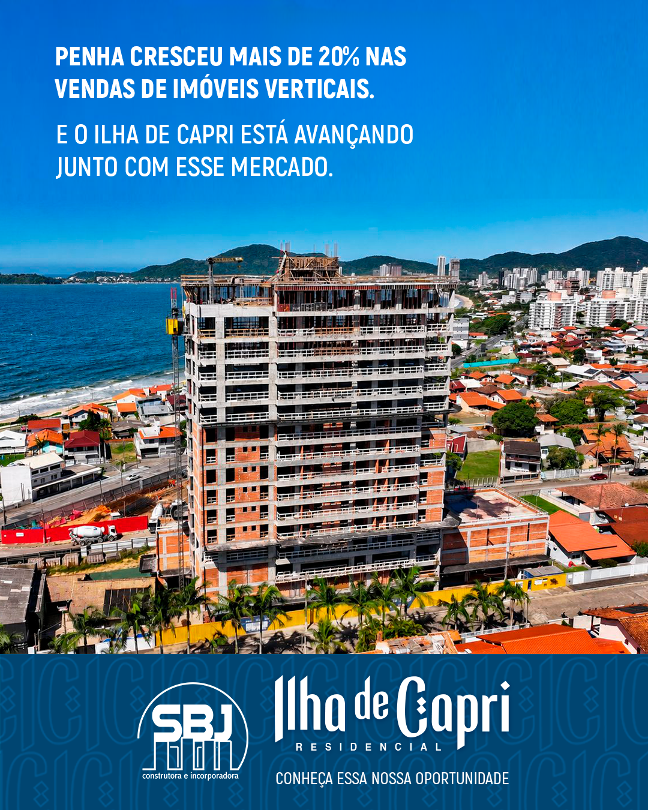
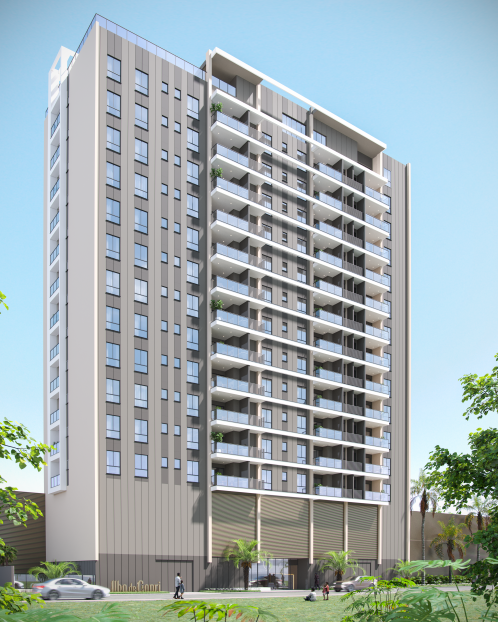

01
EVOLUÇÃO DA OBRA
O futuro já está em construção.
Um olhar de perto sobre o avanço do Ilha de Capri.
Abrir no YouTubeUM NOVO MARCO NA OBRA
Concluímos o último pavimento de construção do Ilha de Capri. Um novo passo na realização do seu próximo endereço em Penha.
Veja a evolução da obra
01 / ACOMPANHE DE PERTO
Veja o Ilha de Capri avançando e acompanhe os detalhes de um projeto pensado para viver bem no litoral.
EVOLUÇÃO DA OBRA
Um olhar de perto sobre o avanço do Ilha de Capri.
Abrir no YouTubeAo reproduzir, o vídeo será carregado pelo YouTube. As imagens mostram o estágio da obra na data de gravação.

PERSPECTIVA ILUSTRADA02 / SEU PRÓXIMO ENDEREÇO
No centro de Penha, um projeto para aproveitar o melhor do litoral. Conforto em cada ambiente e espaço para novos momentos.
Piscina · Espaço gourmet · Academia · Salão de festas · Brinquedoteca
Receber informações do Capri03 / CONHEÇA O PROJETO
Explore o projeto, os ambientes e os detalhes que fazem do Ilha de Capri um lugar para chamar de seu.
04 / A CONFIANÇA DE CONSTRUIR COM A SBJ
Por trás do Ilha de Capri, está o compromisso da SBJ com cada cliente e cada entrega.
Conheça a nossa históriade história construindo
novos capítulos.
em atraso.
Compromisso com a entrega.
05 / DÊ O PRÓXIMO PASSO
Conheça os detalhes do empreendimento, tire suas dúvidas e combine uma visita diretamente com o Fábio pelo WhatsApp.
Residencial Ilha de Capri
Rua Avelino J. Reis, 97
Centro · Penha / SC
Fale com o Fábio para saber mais sobre o empreendimento e agendar sua visita.